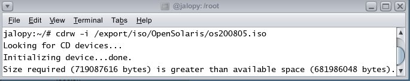
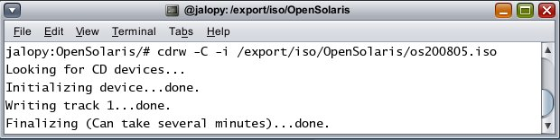

Using Solaris to Burn the OpenSolaris 2008.05 CD Image
By Jim Connors 6 May 2008
If you're using Solaris or OpenSolaris as a platform to download and burn the recently announced OpenSolaris 2008.05 image, the instructions found here may need a slight modification. After downloading the Live CD, you are instructed to use the cdrw(1) command as follows to burn the image to CD:
cdrw -i /path/to/iso/image/os200805.iso
Here's what might happen on your system when you attempt to use the 'cdrw -i' command:

The cdrw(1) command fails because it thinks the ISO image is larger than the default capacity of the CD. The solution to this problem is explained in these excerpts from the cdrw(1) man page:
"Most commercially available drives allow writing beyond 74 minutes as long as the media has the capacity (such as 80–minute media). However, the ability to write beyond 74 minutes might not be supported by the drive in use. If the drive supports this feature, then use the -C option to indicate that the tool should rely on the capacity indicated by the media.
"-C [option] Uses stated media capacity. Without this option, cdrw uses a default value for writable CD media, which is 74 minutes for an audio CD, 681984000 bytes for a data CD, or 4.7 Gbytes for a DVD."This time let's invoke 'cdrw' with the -C option.

Voila.